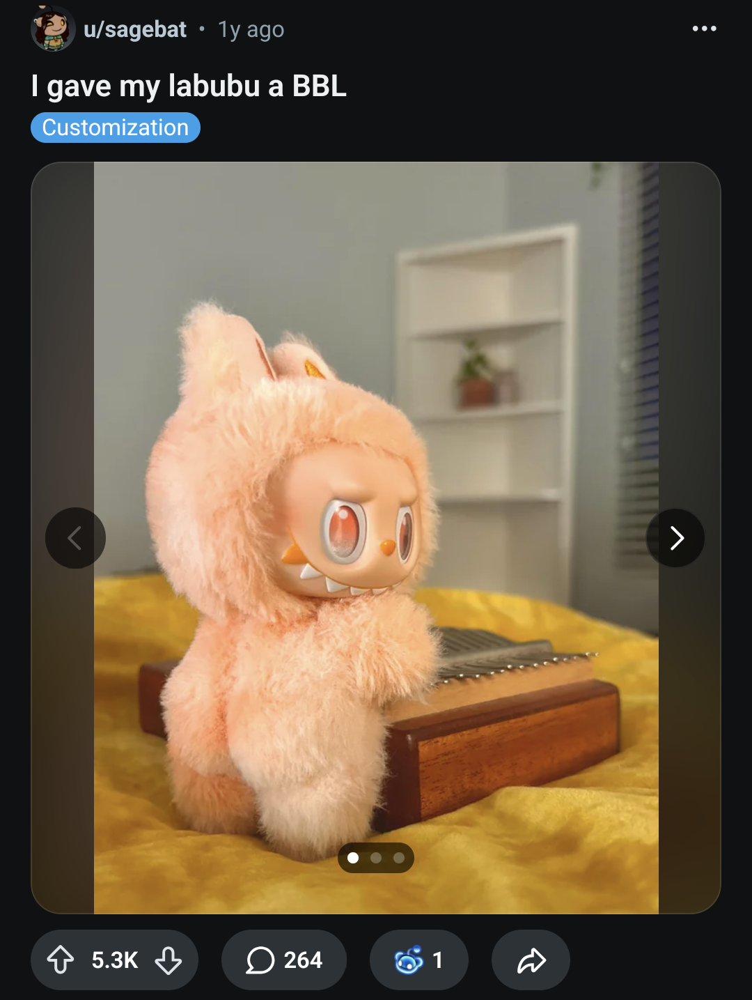
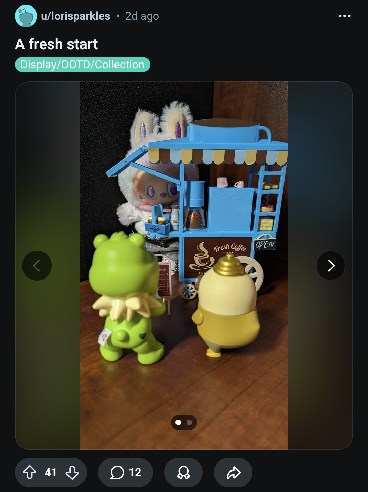
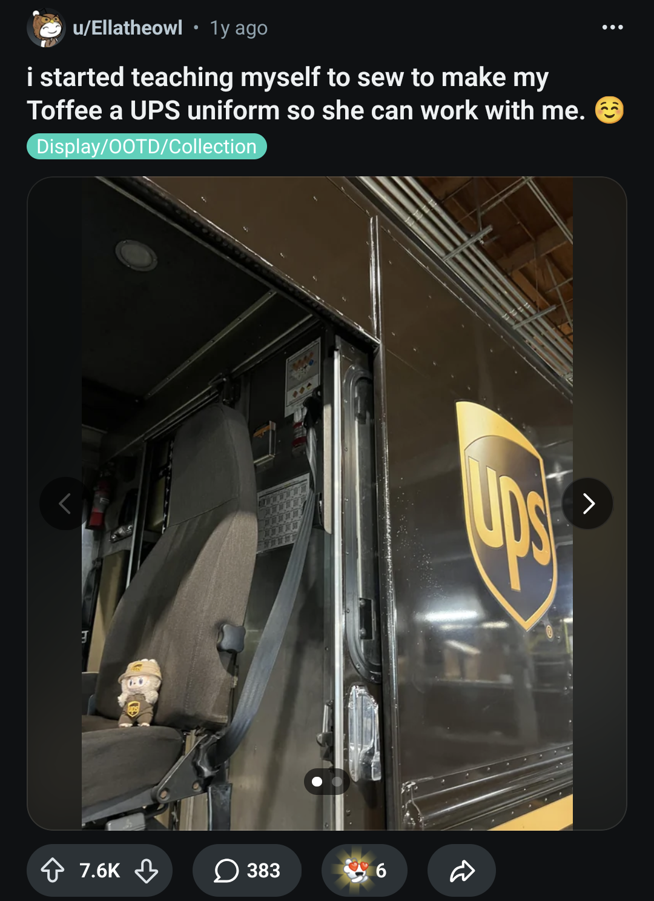
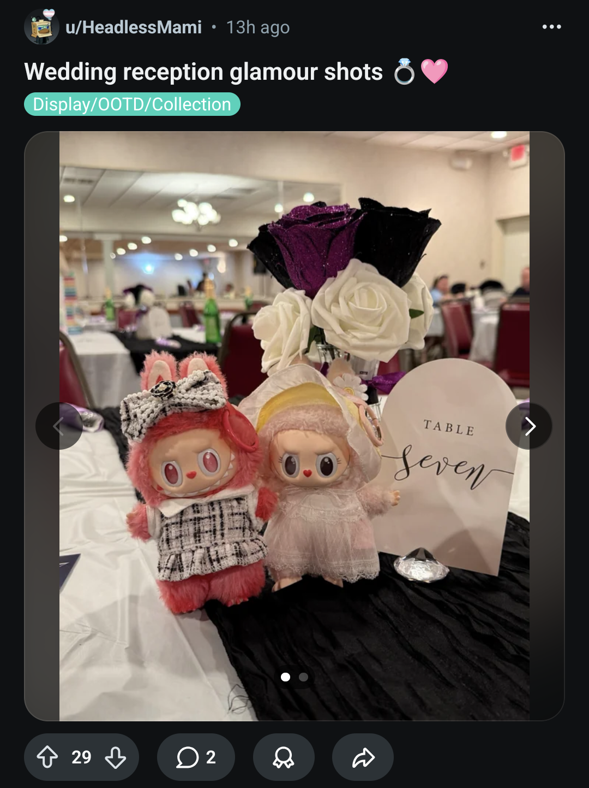
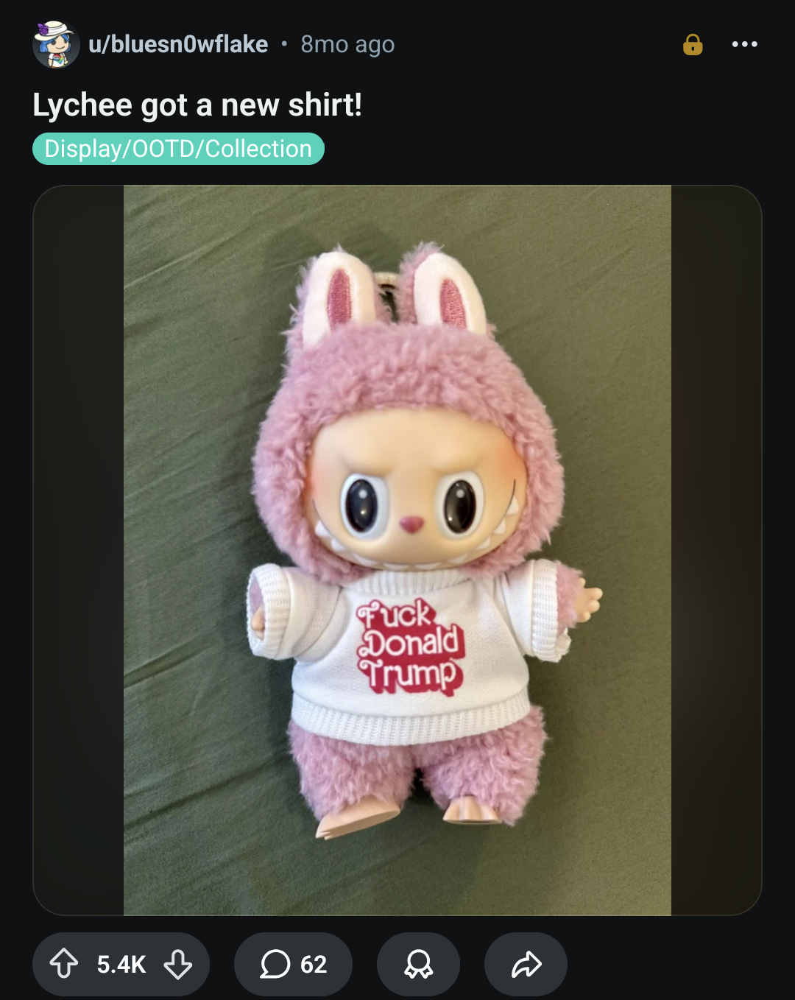
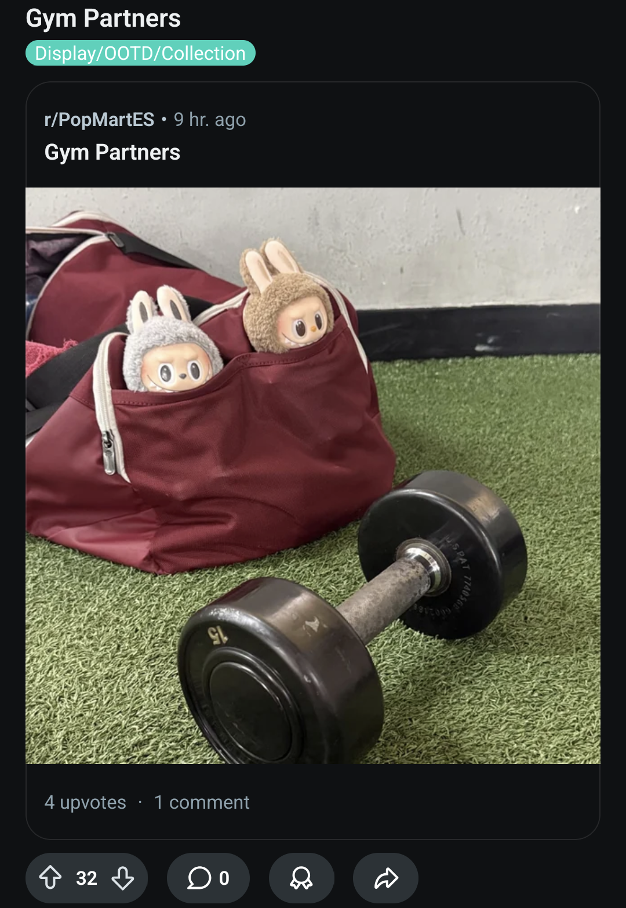
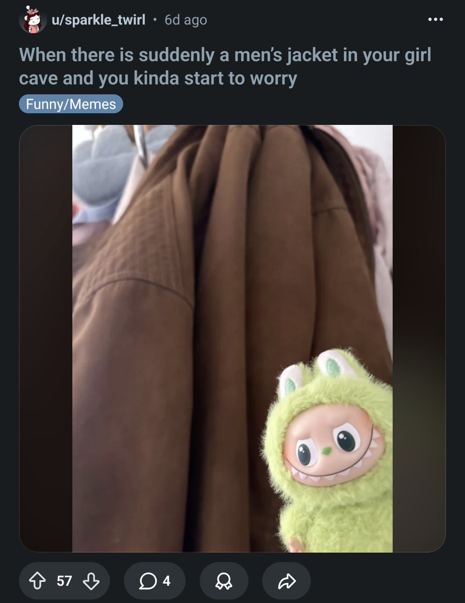
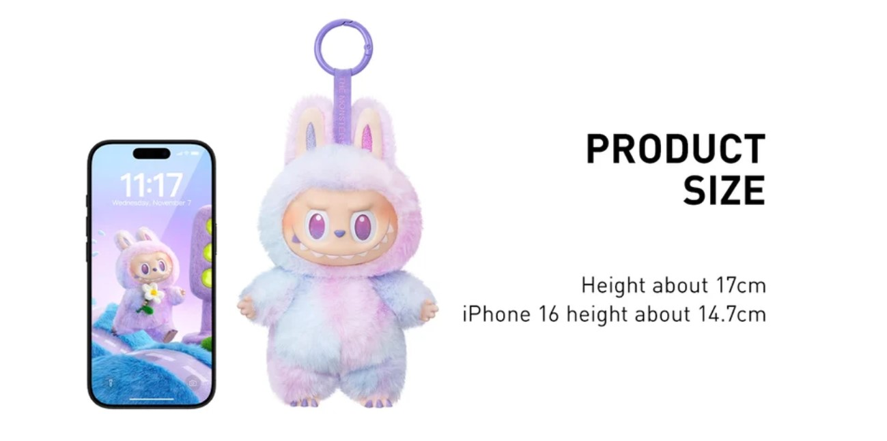
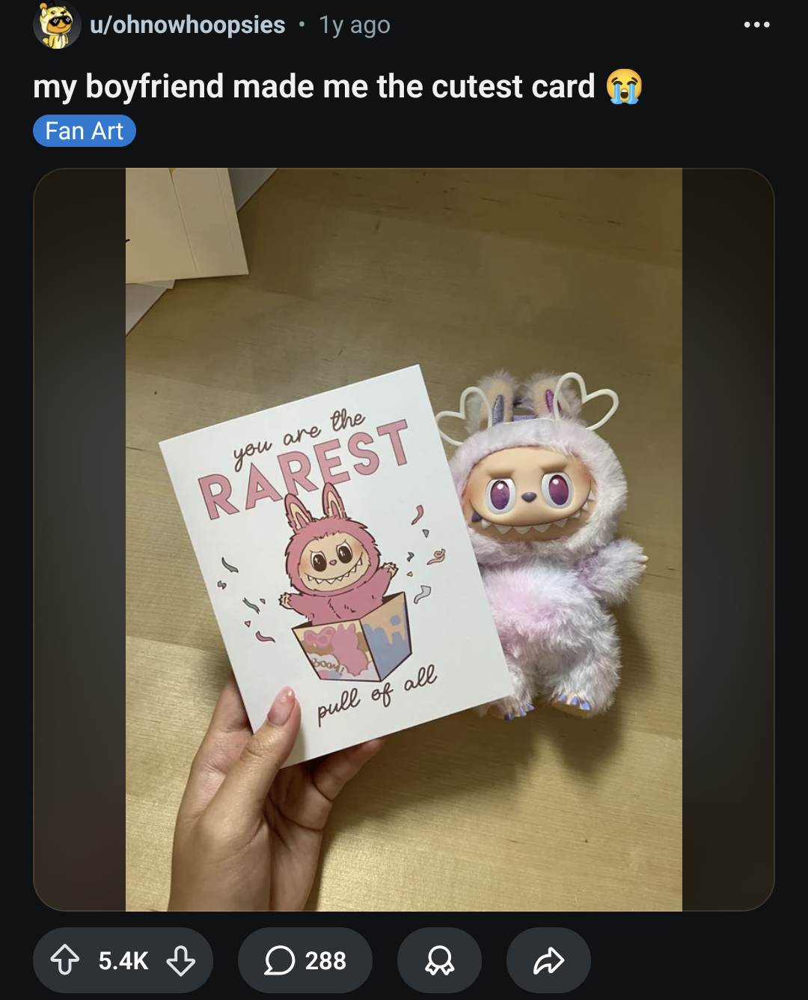

On Labubu: consumption and cultural simulation
25th May 2026Sometime last year I saw a man in his young to mid-twenties with a fluffy toy grinning cheekily out at the world from a clip on his belt. The contrast between his masculine-expressing clothing and the plushie jarred. It was some sort of statement, but I didn't know how to interpret it and I couldn’t forget it. That was my introduction to Labubu.
Meeting Labubu and Pop Mart
Labubu is a small fluffy toy with stubby arms, rabbit eats, a round body and large head filled with huge doe-eyes and a wide "snaggletoothed" grin. Created in 2015 by artist-designer Kasing Lung for a picture book series, Labubu and her magical elven companions - each imbued with unique characteristics - are inspired by Nordic mythology and dubbed “The Monsters”. These whimsical and curious (female) elves have lived out their carefree lives in the forest for millenia; at least, until 2019 when POP MART acquired exclusive rights to the Labubu IP.
POP MART is, in their own words, “a rising global force in pop culture and entertainment”, with “over 500 stores in 30+ countries and regions, more than 2,300 ROBOSHOPS and e-commerce." (A ROBOSHOP, for the uninitiated, is a vending machine for toys.)
Labubu may be POP MART’s biggest draw, but the brand sells numerous other characters made by different “artists”. There's Molly, Dimoo, Pucky, skullpanda, crybaby and others, each designed by different artists. Each character has pages of plushies, figures, charms, phone cases and bags. There are crossovers between characters and other brands, like coca-cola, Disney, even UEFA.
Labubu is cute. But why is it so successful, so suddenly? Why are adults wearing them on their belts?
Escaping adulthood and loneliness
Labubu has to be viewed with reference to the Coronavirus pandemic that coincides with her POP MART launch in 2019 and rise to fame in 2024 after promotion by K-pop idol Lisa (which was not an official endorsement).
While experiences during the pandemic were not homogeneous, many younger people experienced a specific sort of hardship - missing a part of their youth. Forced into isolation, young adults missing out on social engagement and opportunities to make friends and social networks, learn social skills and explore behavioural boundaries. In this regard, Labubu seems to have proven very effective at acting as an avatar and companion.
{kind=link}

Above: A reddit user shares details on how to give Labubus a BBLIn the years following the pandemic many of us, across all ages, embraced nostalgia - a yearning for either true or imagined pasts – comforting associations which offer us an imaginary respite from the complexities, threats and uncertainties in the present day.
We are in a period of unprecedented institutional weakness without real trust in the possibility for things to improve. Affordable housing and stable careers are no longer even expectations. In the West, economic decline, intractable political fragmentation and conflict are the stable elements of reality.
There is no doubt that Labubu and plushies in general find favour among those simply seeking comfort, the cute and the soft – the ‘kidults’ and the ‘disney adults’. Associated cultural movements like Kawaii and K-Pop, especially relevant because of K-Pop star Lisa’s endorsement of Labubu, promote childish behaviour and aesthetics. The name itself, Labubu, is obviously chosen for babyish associations. Labubu herself is designed using the “baby schema”.
But while nostalgia and a rejection of ageing and adulthood is part of Labubu’s appeal it isn’t the full story. While reminiscent of plushies of bygone times – think beanie babies, furby, build-a-bear, even jellycat – Labubu was, to most people, a new character when they encountered her in 2024 or 2025.
Much more important is the social role Labubu can play for those, especially Gen Z, affected by both loneliness and pervasive use of social-media.
In the UK, 33% of those between 16 and 29 report being lonely "often, always or some of the time". This age group spends less time with others than previous generations and role-play with toys provides a space in which to play out or simulate adult social interactions.
{kind=link}

Above: A reddit user shares an image of plushies buying coffee with a friendCountless posts on social media platforms show Labubus sweetly performing mundane discretised activities familiar to our daily lives; taking the bus, taking selfies, eating, drinking coffee with a friend, getting married. This role-playing simulates, rehearses (or perhaps substitutes for) real behaviours that the owner might want to or actually engage in.
Many of those roles are not speculative, though, but show Labubu accompanying owners in their daily lives or special events, performing mirror-activities like an avatar.
{kind=link}

Above: A reddit user shares an image of Labubu accompanying them in their work van{kind=link}

Above: A reddit user shares an image of Labubus dressed for, and attending a weddingSocial consumption
How do I know about this role-playing function, though?
Labubu exists as much on social media as she does in the real world and by doing so she takes on numerous roles aside toy. In addition to Labubus simply posed in cute scenarios, owners post images and videos of unboxings, collections, rare Labubus, fake Labubus (Lafufus) and Labubus in the real world.
Labubu’s teeth and her name were chosen to be memorable and to stand out against other plushies. But early on in Labubu’s rise to fame, Lung noticed they took on a social role:
“In the past, before the keychain plush dolls were released, people would bring the larger vinyl dolls with them on vacation, in cafés and restaurants. I saw a lot of this on Instagram.” (source)
This usage shaped the product, leading to introduction of the smaller, portable keychain Labubu and becoming an important marketing focus for POP MART, whose own marketing materials depict Labubu taking selfies and making and sharing digital content.
Above: POP MART advert depicting Labubu taking selfies and editing a social media video{kind=link}
By sharing images of Labubus, the social opportunities multiply.
A photo of Labubu could simply announce oneself and that you are culturally relevant, part of the group and up-to-date on busy social media.
The quantity or rarity of Labubus in a collection (exoticism and conspicuous consumption) showcases the owner’s economic ability. Especially for the genuinely wealthy, Labubu is often pictured alongside expensive fashion items like bags, clothing, watches, jewellery.
Beyond that comes the ability to communicate more personal values by inserting by dressing and customising Labubu. Sharing images of Labubu posed and role-playing signals offers a chance to leave a statement or joke.
{kind=link}

Above: A reddit user who has styled their Labubu wearing a cute Fuck Donald Trump T-shirt, softening the political messageSharing images of Labubu in physical places or with meaningful contents communicates the owner’s activities, perhaps in a more self-aware way than a selfie.
{kind=link}

Above: A reddit user shares an image of their Labubus joining them at the gym{kind=link}

Above: A reddit user announces their new romantic partner through the eyes of LabubuShared via social media Labubu is not a static or simple sign but one which can be configured endlessly to communicate - belonging, uniqueness, exoticism, wealth, eliteness.
When I saw Labubu hanging from that young man’s belt, he was (ostentatiously) extending Labubu’s poignancy, incubated on social media, into the real world.
He signals his cultural relevance, age, belonging and perhaps something of his own values or alignments according to which Labubu and how it was styled. Through all this he is aiming for connection with others, perhaps especially women his age (who buy 80% of Labubus). Does he play with Labubu at home? I highly doubt it.
Labubu is thus an accessory, with similarities to jewellery but carrying potential for more nuanced statements and individual modification. Like jewellery, a worn Labubu can be taken off, as context requires. You might not wear a Labubu in front of parents or in a work context, not wanting to emphasise your youth.
Social media consumption
Social media, then, doesn’t just provide “free advertising” for POP MART, but creates much of Labubu’s cultural value.
When people affirm the value of the product on social media viewers are encouraged to join in or miss out; an immediate and self-strengthening engine which propels the product’s demand.
For the consumer, participation – whether genuine or not - can result in gaining genuine social capital (the process of simulation, according to Baudrillard and others, wherein emulation becomes indistinguishable from the real, to the extent that the difference is irrelevant). Once a product, initially without sign value, gains a socially-determined value, that value becomes real, and sellable.
Yet the value is fragile – as soon as Labubu’s cultural relevance wanes, its use as a signifier collapses, even inverts as a sign of outdatedness.
The consumption of social media influenced objects is in an image based perception. Therefore also the primary value is to enable an image/video (social media post) or overall to perform the social action of wearing the item.
Because of this, my argument is that most of all, the value of Labubu is centered not in the physical object but in its relationship to social media, and that even its real-world value returns to social media. Social media is the sustaining engine which powers Labubu’s value and the object cannot lose its association with social media. In this Baudrillardian hyperreality, where the real and the imaginary are confused and interrelate endlessly, it’s unclear whether a Labubu in social media communicates about the real-life worth of the individual, or whether a Labubu in real life communicates about the social-media worth of the individual. It’s not even clear which of the two value systems leads which.
{kind=link}

Above: Labubu's size is displayed in relation to an iPhone for reference
Gambling and addiction:
With Labubu, POP MART have – I argue intentionally – created an addictive product-consumption cycle.
Addiction forms through repeated actions that may result in an exciting or rewarding experience. The quicker and easier the action-reward cycle the easier it is to reinforce the cycle. Being around others with a shared addiction can encourage an attraction to the activity. We are all most susceptible to the lure of addictions during low points in life. (source)
The way Labubus are sold is consciously designed to produce this cycle. They are sold online (note that researchers have found that isolated teenagers pursue short-term rewards more than when they are in a social group), from sealed boxes or from dispensers - and purchasers have taken to sharing their unboxing on social media, which provides a strengthening of the reward loop as well as social reinforcement of the addictive activity. The childish nature of the toys also encourages adults with disposable income to adopt a childish desire – without self-control or inhibition.
I encourage you to go and search for "LABUBU Unboxing" to understand what I mean.
An unknown Labubu in a package, shared over social media or with friends in real life is the vehicle for the excitement. The attention from others, in real life or by likes and comments, is the reward, and reifies the value of the experience. Of course, many of these unboxing videos are insincere, and all of them are performative and staged. Incredibly, the genuineness of their emotions doesn’t seem important.
As a UX, er, sychofantic grifter (I couldn't make out their actual role) gushes on LinkedIn:
[Labubu was] sold in mystery boxes (which made it addictive)...
That uncertainty? It’s intentional.
This taps into:
Variable rewards, the same psychology behind slot machines and social media likes.
This isn’t just marketing. It’s UX-led FOMO.
Surprise and scarcity drive habit loops.
Labubu and other Pop Mart are always released in limited quantities, in seasons and trends. There's a very real likelihood that you can't have the exact one that you want. Online, sold-out models haunt page after page of products. Queues and sold-out stores further buttress the importance of the products.
This type of behaviour seems to be a genuine cultural trend – a tightening of our response to scarcity after the pandemic and the Ever Given supply shortages. Prime drinks offer a mirror example in the same time period.
Collecting taps into a desire to hold onto things and hoard, especially during tumultuous times of change when we feel little control. It seems to me that the drivers for this response are still in place - high cost of living, job insecurity and massive changes in the world of work as a result of AI. The acceptance of the mystery box method leads to this uncertainty being folded uncritically back into the fabric of society and social relations.
{kind=link}

Above: A reddit user compares their partner to a lucky Labubu unboxing
Needless to say, the relief provided by a consumption-based addiction is, at best, a mirage. Yet the cost is real - money, time and waste.
Incidentally, the blind box mechanism seems extremely close to the legal definition of a lottery – which is defined as having three elements: (1) payment is required to participate; (2) one or more prizes are awarded; (3) those prizes are awarded by chance.
And indeed, for many who have become addicted to buying Labubus and other mystery box items, the financial losses are easily compared to gambling.
I think there's a common self-consciousness around addiction, but which views it an inevitability. It's widely acknowledged that social media addiction affects nearly all of us to some extent - indeed in March 2026 Meta and Google were found guilty of intentionally designing addictive platforms - yet relatively few take serious steps to curb social media addiction, at least not with the sort of framing we might approach smoking or gambling with. Culturally we are therefore primed to accept addictions as real and widespread but not necessarily undesirable, perhaps even something to enter into happily.
Above: Examples of self-conscious and ambivalent attitude to addiction{kind=link}
{kind=link}
The snaggletooth Gremlin represents this in some way; she’s conscious of her own mischief. She is comfortable with this ambivalence and resigned acknowledgement of addiction. She might say "I'm so addicted to XYZ it's terrible (haha)". In POP MART’s own telling, she “always wants to help, but often accidentally achieves the opposite”.
Labubu: Social product design and object fetishism
Labubu demonstrates the complex social functions that objects can fulfil for us. Once reified by a critical mass of people (accelerated through social media) objects in modern capitalism can function as near pure signs, shedding all but the faintest reminder of their use value.
Marx identified “private property” as a fetish object, providing the example of the “sensuous glitter” of metal money, creating a fascination in the mind of the obsessor. Later sociologists, especially Baudrillard, realised the widespread relevance of this process in modern, mainly Western, patterns of consumption and culture.
According to Baudrillard, “sharing of the value of the object … expressing desire for and approval of the object and its capacities, celebrating the object, revering it, setting it apart, displaying it, extolling and exalting its capacities, eulogising it, enthusiastic use of it, are the sorts of practices that fetishise objects.”
For Labubu’s fans, every single one of those practices apply. Yet however arbitrary or contrived the object itself, once fans attribute values to Labubu, through ritualised worship and social reification, those very values are manifested - “the specialness with which the object is treated makes it special”.
Obviously, that specialness does not extend to those of us who see no value in Labubu. Yet the signs and symbols we do imbue value into: jewellery, clothing styles, tattoos, hair style, art, home decoration – are also socially determined, just perhaps over a longer period of time.
Baudrillard saw another role for constructed imaginaries as both defending the individual from reality (escapism) and defending reality from being unmasked as itself being fictional. He provides the example of Disneyland, where the "effect of the imaginary [conceals] that reality no more exists outside than inside the limits of the artificial perimeter".
In the same way, Labubu acts to buttress reality and the roles we play in it (more specifically - the social constructs, behaviour patterns, expectations, hierarchies, economic frameworks, etc) by providing a clearly fictional counterexample of roleplay. Labubus meeting over coffee are engaged in imaginary play. Yet two people meeting over coffee are no less imitating a rehearsed behavior with cultural expectations, meanings and delineations.
I wonder if the same happens with consumption and capitalism itself - this pointless purchase: compulsive, impulsive, addictive, wasteful; alienated from the processes of making, conceals that so many purchases are, and that we consume in a state of nearly complete alienation.
I've been reading:
Simulacra and Simulation, Jean Baudrillard (1981) [download]
Fetishism and the social value of objects, Tim Dant (1996) [download]